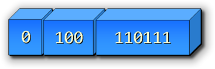
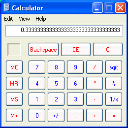

Java has both object types,
such as Scanner and
String, and primitive types, which consist
of numbers, characters, and true-false values.
 You just met the four Java integer types:
You just met the four Java integer types:
byte, short, int, and
long. Each integer type represents a set of signed,
whole numbers of a particular range; byte has the
smallest range, and long has the largest. None of
these integer types, however, can represent fractional
or "real" numbers.
Real numbers in Java are represented by
the two floating-point types, float and
double. Floating-point primitive types
can hold fractional values in addition to whole numbers. These
types are the topic of this section.
How Floating-Point Numbers Are Stored
You've previously seen how binary numbers are used
to represent whole numbers, or integers. We also
use binary numbers to represent real or
floating-point numbers. You might wonder
how this is possible, though, since you can't really
have "half a bit":
 Instead, floating-point binary numbers can store fractional
values because they use a different internal format than
binary integers do.
Instead, floating-point binary numbers can store fractional
values because they use a different internal format than
binary integers do.
Instead of storing one simple binary value,
floating-point numbers are stored as two binary
numbers: an integer value, called the exponent,
and a binary fraction known as the significand or,
more informally, the manitissa. In addition,
floating-point numbers keep one bit reserved to store
the sign of the number.
 When the actual value is used, a mathematical operation is
performed by your computer using the two binary numbers to
compute the final amount.
When the actual value is used, a mathematical operation is
performed by your computer using the two binary numbers to
compute the final amount.
Here's an example. Suppose we want to store the real number
13.75 as a floating point number. We'd first convert the
whole number part to the binary number 1101
as shown in the previous lesson. But, how do we represent
the .75 part?
The fractional portion of a binary number works just the same way as the fractional portion of a decimal number. In a decimal number the first place to the right of the decimal is 1/10, the next 1/100, and the next 1/1000. With the binary, or base 2 system, the first position to the right is 1/2, the next 1/4, and the following 1/8.

Given this information, you can see that we can represent the decimal number13.75 as the binary number
1101.11, where the .11 represents
1/2 + 1/4 or .75 in decimal.
To store this number in the floating-point format, we move
the binary point to the left by 4 places, so we have a
mantissa of 110111 and an exponent of
100 (4 in decimal). Since the number is
positive, the sign bit is 0.
If you're interested, you can learn more about how floating-point numbers are stored, including all of the nity-gritty details that I've just glossed over, get started by reading the Wikipedia article on floating-point numbers.
Floating-point Limitations
Because of this scheme, floating point numbers are often only an approximation of the actual number you are trying to represent.

Most of us are familiar with this concept from fifth and sixth grade when we learned about fractions and decimal numbers. In fifth grade we learned that 1 divided by 3 was 1/3, and 1/3 + 1/3 + 1/3 was 1.When decimal numbers came round the next year, however, things got a little more complex; 1 divided by 3 became .3333333 and there didn't seem to be any way to get back to where you started by adding the results together.
The same kind of thing occurs with binary floating point numbers. Just as you cannot accurately represent the number 1/3 as a decimal (base 10) number, there are certain numbers that cannot be represented in binary (base 2). The only difference is that there are more repeating fractions with binary numbers, than there are in decimal.
This type of problem is called a representational error, or, sometimes, a rounding error.
Floating-point numbers are also susceptible to other kinds of errors that can snare the unwary or the extra-weary. If you add a very small number and a very large number together, for instance, you will often exceed the number of digits that the floating-point number can accurately represent. You can find out more in the Wikipedia article referenced earlier.
Java's Floating-point Numbers
Java has two different primitive types for storing
floating-point numbers, the float and the
double.
Think of them as the Big Gulp (32 oz.) and Super
Big Gulp (64 oz.) of
floating-point numbers. As with the different types in the
integer family, each of these two types uses a different
amount of memory and can represent a different range of
numbers.
While the different integer types differ only in their range, floating-point types differ in their precision as well. The precision of a floating point number is measured by the number of significant digits in its presentation. For instance, assume that your source code contains the following very large number:
double num = 1234567898765432123456.78987654321;
When it comes time to use or display the number, you'll find that
not all that information was actually captured; in fact, the value
for type double only retains about 15 or 16
digits of precision, so the actual value of the variable
num is 1234567898765432200000.0.
Not only did we lose all of the fractional part of the number, but the "whole" digits were rounded to the nearest 100,000. Not very accurate, huh?
Here are the stats, (range and precision), for the two types:
double
The double, (which is the default format
for floating-point literals, just like int
is the default format for integer literals), uses eight
bytes (64 bits) of storage.
The range of numbers it can represent include the positive and negative numbers as small as 4.94E-324, and positive or negative numbers as large as 1.79E+308.
For those of you not conversant with exponential notation, that last is the number 1.79 with the decimal point moved to right by 308 places. That is a very big number.
The precision for a double is approximately 16 significant digits.
float
The float uses half the storage as a
double, at four bytes (32 bits).
The float has about 8 digits of precision, and its range can represent very small positive or negative numbers from 1.4E-45, and very large positive or negative numbers up to 3.4E+38.
As you can see, the double type has
a range approximately ten times that of the float,
although its precision is only about twice the float.
That is the meaning of the name double, which is
short for double precision. For the same reason, some
other languages, such as Visual Basic, call the float
type, a single. The float
type in Python is the same as double in Java.
Floating-point Variables
Just as with integers, you create floating-point variables
by specifying the type, (float or
double), and a name, optionally followed by
an initializer. As with the integers, you can use
floating-point literals, previously initialized
variables, expressions, or user-input methods
to initialize your floating-point variables.
You can write floating-point literals in two different ways:
- using decimal notation, or
- using exponential, (or scientific), notation.
When you use decimal notation, you may use an optional sign, followed by digits and a single decimal point. You may have digits on either side (or both sides) of the decimal-point, but you don't have to have digits on both sides of the decimal, as you do in some languages (such as Pascal).
These are both valid variables, initialized using floating-point literals and written using decimal notation:
double first = .234; // No digit before
double second = 7.5432; // Digits on both sides
About Those floats
When you write a floating-point literal, Java automatically
uses the double type. This creates a problem when
you want to store the number in a float variable.
Remember that floating-point numbers are stored in a different
format than binary integers. To store a double
value in a float variable, Java cannot
simply copy part of the number, as it does for integers. Instead,
Java has to recompute both the mantissa and the exponent
portion of the number, which it does not do automatically.
Because of this, when you want to store a literal floating-point
number in a float variable, you must add an
F at the end of the number like this:
float third = 3.5F;
float fourth = .2756f;
Note that you may use either an uppercase F
or a lowercase f. You may alos append an uppercase
D or a lowercase d to a literal to signify that
it is of type double. This is occasionally useful:
the literal 7, for instance, is an int,
while 7d and 7.0 are both
double.
Exponential Notation
You can also write floating-point literals using exponential, (aka scientific), notation. To use exponential notation, write the first digit of your number, followed by a decimal point and all of the rest of your digits.
For instance, to write the number 23456.789
in exponential notation, start by writing:
2.3456789
Immediately following this, write an e
or an E—making sure you don't
add any spaces—followed by the number of places required
to move the decimal when the number is "decoded."
In our example, we need to move the decimal to the right by four places to reconstruct our original, so the finished number would look like this:
2.3456789E4
If the number you're working with is small—say
.000004572—you do the same thing.
The only difference is you use a negative exponent which says,
"move the decimal point to the left, not the right". To write
the preceding number in exponential notation you'd write:
4.572e-6
Make sure you don't confuse using a negative exponent (where the sign goes after the E/e) and a negative number, where the sign goes before the first digit.
What About Money?
 The limitations of floating-point numbers
are especially troubling when it
comes to money, because one of the numbers that can't be
accurately represented in binary is 1/10, or a dime. That
means that if a computer uses floating-point numbers to
keep track of the money in your bank account, there's a
chance for someone to siphon off small amounts on
each transaction.
The limitations of floating-point numbers
are especially troubling when it
comes to money, because one of the numbers that can't be
accurately represented in binary is 1/10, or a dime. That
means that if a computer uses floating-point numbers to
keep track of the money in your bank account, there's a
chance for someone to siphon off small amounts on
each transaction.
This is called salami slicing and it's the basis
behind the plot of several different films, including
Superman 3, (with Richard Pryor playing the accountant
Gus Gorman), Hackers and Office Space.
Some Solutions
So, then, what should we do about money, since floating-point numbers are so "approximate"? There are several solutions.
First, we could keep track of all numeric values using integers, which are always completely accurate, even if they don't have the same range as floating-point numbers. Instead of keeping track of a floating-point value like $ 1,253.75, you'd store it as the integer 125,375, and remember that the number represents pennies.
If you have to do a floating-point calculation, such as averaging, you'd need to manually "round" the value by adding a half-cent or .005 before converting the floating-point number back to an int.
That's what high-performance financial applications, like those used by Wall Street and banks, do. Rather than using floating point numbers at all, you can store the actual data and do calculations in thousands or a cent (called mills) and only convert to dollars and cents when doing input and output.
The only problem is, since a long can only store numbers up to about +/= 18 quintillion, the largest dollar amount you'll be able to represent is about 180 trillion. That's probably enough for your personal financial situation (as long as the dollar doesn't accelerate its devaluation), but it's not enough for things like the national debt.
A Money Data Type
A better solution would be to create an accurate type to
represent Money. Many programming languages
have something like this. In C#, for instance, this type
is known as Decimal. Generically, these are
called BCD or Binary Coded Decimal types.
While Java doesn't have a BCD primitive type, it does have several arbitrary-range number systems represented as classes in the Java Class Libraries. An arbitrary-range number system is one that more closely mimics the theoretical number system, since it's numbers aren't restricted to a particular amount of storage.
The Java class that's best
for money is called BigDecimal. Using
BigDecimal for your calculations, though,
is more complex and your program will run more slowly.
Which Should You Use?
Choosing between using scientific notation and decimal notation when you write your literals is usually not difficult. If you have very large numbers or very small numbers, you should use scientific notation. If you have "numbers of everyday experience", you probably want to use regular decimal notation.
Deciding between the types float and double
also is usually not very difficult. The type double
is the "natural" type for most floating-point hardware today,
so, unless you have some compelling reason to use
float, don't.
Finally, what about choosing between int and
double? Why not just do everything as a
double so you only have to deal with one numeric type?
As tempting as that sounds, doing calculations with double
is significantly slower than using int.